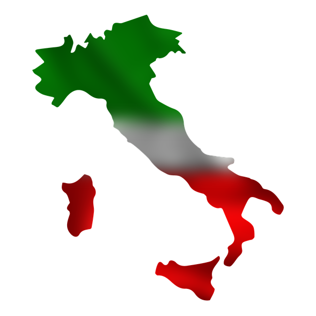

סיור לימודי בעקבות איחוד איטליה
הקדמה-איחוד איטליה
חזרה לדף ראשיאיחוד איטליה הוא איחוד שקרה בעקבות תהליך פוליטי וחברתי שקרה בסביבות המאה ה-19, במקביל להתעוררות הלאומיות במקומות אחרים באירופה. וזה גרם לאיחוד הנסיכויות והמדינות שנמצאות בחצי האי האיטלקי. כשאחד הגורמים לכך הוא הכיבושים של נפוליאון שנדבר אליו בהמשך. וכך, האיחוד של איטליה ודמותו של גריבלדי הם חלק חשוב לדעת עליו לפני שאתם מתחילים את הטיול שלכם באיטליה באתרים שנדבר עליהם במדריך.
בגלל נפילת האימפריה הרומית איטליה הייתה מפוצלת למדינות רבות. ובגלל העושר ,האוצרות והמורשת ההיסטורית של האימפריה הרומית שהשאירה אחריה באותם מדינות ומיקומה הגיאוגרפי של איטליה , נמשכו לאיטליה הרבה כוחות חזקים כמו הכנסייה הקתולית וממלכות שונות כמו למשל , שלטו על חלקים ממנה הפרנקים, הגרמנים המוסלמים ועוד הרבה עמים אחרים וגרמו לאיטליה להישאר משועבדת ומפוצלת למדינות ויותר נכון לשמונה ממלכות שונות, חלקים שבהם שלטו הממלכות, חלקים שבהם היה שלטון איטלקי וחלק שבו שלטה הכנסייה הקתולית, ורק כשכל המדינות יסכימו על איחוד ביניהם או כשמדינה אחת תצליח לכבוש את שאר המדינות , אפשר יהיה להקים את איטליה.
כשנפוליאון כבש את איטליה, הביא לאיטליה את העקרונות של המהפכה הצרפתית והציג את עצמו כמשחרר של איטליה מהסדר הישן, של השעבוד של המלכים והכנסייה. וכתוצאה מכך נוצר ביטול של הפיאודליזם באיטליה, ושל הכנסייה הקתולית וניתנה חופש של הפרט. וכך באיטליה התחזקו רעיונות ההשכלה והערכים הלאומיים, ובנוסף גם התחילה תודעה לאומית רומנטית ייחודית שנפוליאון הכניס לאיטליה בעזרת תרבותו הצרפתית, והאנשים באיטליה נזכרו בגלל זה , בשפה, היסטוריה והסמלים שלהם , וזה גרם להם לרצות להשתחרר מהכיבוש והשלטון הצרפתי של נפוליאון וכך להקים מדינה איטלקית. הכיבוש של נפוליאון כתוצאה מכך גרם לצמצום של מספר המדינות האיטלקיות, לביטול מדינת האפיפיור ובנוסף, בדרום איטליה שלטה ממלכת נאפולי, שאחיו של נפוליאון הציב כמלך את אחיו ג'וזף בונפרטה. ובסופו של דבר צרפת הצליחה להשתלט על חלקים רבים של איטליה והם גרמו לעידוד של הלאומיות האיטלקית שנשלטו תחתיהם ולהחלשת השליטים האזוריים. לאחר נפילת נפוליאון החליטו בקונגרס וינה להשיב את איטליה לגבולות הישנים שחילקו אותה לפני הכיבושים של נפוליאון .
אחד מהאנשים שהכי השפיעו גרמו לאיחוד איטליה הוא ג'וזפה גריבלדי שהוא חייל קרבי איטלקי שהחל את שירותיו הצבאיים כלוחם בצבא של סרדינייה - פיימונטה, והשתתף כחייל במרידה כנגד המלוכה שלאחר מיכן נכשלה. וכתוצאה מכך , גריבלדי נידון למוות. ולכן גריבלדי החליט להימלט מאיטליה לדרום אמריקה ששם שיתף פעולה במרידות מקומיות , וביחד עם 60 גולים איטלקיים שלחמו לצידו הקים את היחידה הצבאית של ה"חולצות האדומות" וכך הפך להיות מנהיג צבאי. ולאחר מכן שבו לאיטליה כדי להקים מהפכה שנועדה לאיחוד איטליה. ואז שוב פעם נאלץ לברוח מאיטליה, עד שקמילו בנצו דה קאבור ראש הממשלה של סרדיניה- פיימונטה הזמין אותו לשוב חזרה לאיטליה להילחם לאיחודה ושיחרורה. וקמילו בנצו דה קאבור לעומת זאת, היה מנהיג דיפלומטי, שמשפחתו התעשרה בגלל כיבושי נפוליאון ושוויון המעמדות , ובגלל זה התחנך בחינוך ביתי ובאקדמיה צבאית וידע הרבה שפות. ורצה באיחוד איטליה שויטוריו עמנואל השני יהיה שליטה של כל ממלכת איטליה. ובגלל שהממלכה של סרדיניה- פיימונטה לא תוכל להצליח לגרום לאיחוד של איטליה הוא נעזר בקשרים דיפלומטיים עם בריטניה וצרפת, שיעזרו לו לפעול יחד נגד השלטון האוסטרי-הונגרי שהיו שייכים לו הרבה שטחים בצפון איטליה. והמלך ויטוריו אמנואלה השני הוא מנהיג דיפלומטי וצבאי, הוא מונה למלך על סרדינייה-פימונטה בשנת 1849 כשאביו וויתר על כס המלכות, והוא הנהיג חוקה ברוח רעיונות ההשכלה, בממלכתו וניהל ביחד עם קמיל בנצו די כבור ניהלו מאבקים דיפלומטיים וצבאיים למען איחוד איטליה. בנוסף, גם ג'וזפה מציני תרם לאיחוד איטליה בכך שהכניס לאנשים באיטליה בעזרת ספריו שכתב והפיץ בכל איטליה לתודעה את אמונתו שאיטליה צריכה להיות מדינה איטלקית עצמאית, סביב מרכיבים האתניים היחודיים של העם האיטלקי כמו השפה, ההיסטוריה, התרבות ועוד, ושזה ציווי אלוהי וזה סדר של הטבע שכל עם צריך לחיות במדינה משלו. והכמות הגדולה של האנשים שקוראים את הספרים שכתב ירצו אחר כך להיכנס למאבק למען הגשמת החזון של מדינה איטלקית עצמאית.
בשביל איחוד איטליה ומימוש המטרות הלאומיות האיטלקית היה מאבק צבאי באיטליה אוסטריה בגלל, המרידות של מקומיים במקומות שונים כמו גרמניה והונגריה למימוש הרעיון של הלאומיות, מה שגרם להיחלשות של ממלכת אוסטריה והניצול של האיטלקים להילחם למען איחוד איטליה. בנוסף , צרפת בהנהגה של לואי נפוליאון גרמה לזירוז של איחוד איטליה בגלל שסייעה לממלכת פיימונט סרדיניה במלחמה עם אוסטריה וכך גרמה לסילוקה של ממלכת אוסטריה ממרבית שטחי צפון איטליה.
כמו שאתם כבר יודעים כבור הוא דיפלומט מאוד חכם ובגלל זה הוא משתמש בכישורים הדיפלומטיים שלו כדי לו רק לשכנע את צרפת להילחם מול ממלכת אוסטריה בתמורה לשטחים באיטליה, הוא גם מצליח למשוך בחוטים ולהשתמש בכישורים הדיפלומטיים שלו שלו כדי לשכנע מורדים אוסטריה באותם שטחים שנישארו בשליטתה למרוד נגדה וליגרום למהפכות לאיחוד איטליה כמו שקרה בפארמה, מודנה, בולוניה ופירנצה שהצטרפו למדינת פיימונט והכפילו את שטחה של פיימונט זירזו את איחודה של איטליה.
ואז ב 1860 גריבלדי יוצא ביחד עם ראש אלפי מתנדבים של ה"חולצות האדומות" שזה מבצע צבאי בכינוי שלו ה"מסע האלף" וכובש את ממלכת שתי הסיציליות הכוללת את האי סיציליה מדרום לאיטליה ואת החלק הדרומי של המגף האיטלקי, ומצרף אותן לשטח של מדינת פיימונטה. וככל שמסע האלף מצליח יותר מצטרפים אליו עוד יותר אנשים ולאט לאט כובש את דרכו צפונה כאשר לאורך שנות ה 60 של המאה ה 19 מצטרפות לתנועה הזאת גם מילאנו וונציה ובסופו של דבר נכבשת גם רומא, ובסופו של דבר כל השטחים מועברים לפיימונטה מלך איטליה.
חזרה לדף ראשי